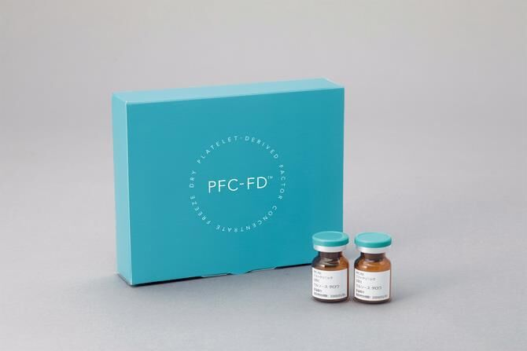
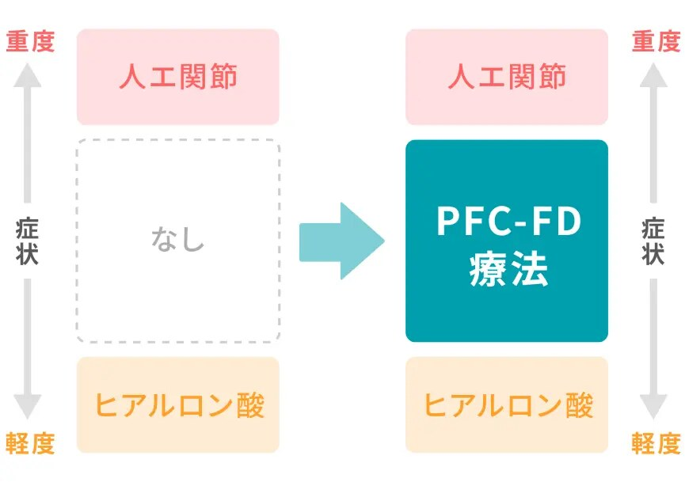
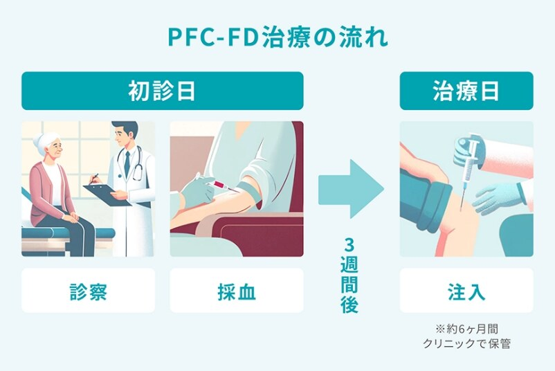
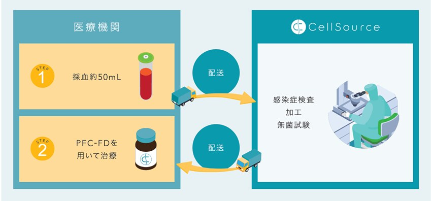

PFC-FD™療法とは、患者さん自身の血小板に含まれる成長因子の働きを活用し、人の身体にもともと備わっている“治癒力”を高める再生医療です。対象は、変形性膝関節症、膝の骨軟骨損傷の患者さんとしております。
セルソース株式会社のPFC-FD™は、豊富な実績と積み重ねてきた研究結果の成果として、従来品（PFC-FD™）よりさらに多くの成長因子を含む製法の開発に成功し、2024年4月より新たに“PFC-FD™2.0”の提供が開始されました。
従来のPFC-FD™をベースとし、細胞組織修復や抗炎症機能を持つ成長因子をより多く含んでいます。
また、炎症機能を持つ因子については従来と変わらず、極めて少ない量です。
従来品よりも自己修復力が強く活性化されることが期待されます。
＜PFC-FD™療法の位置づけ＞
ヒアルロン酸注射による“保存療法”と、人工関節などの“手術療法”の中間に位置するもので、人生の質を良くするための、再生医療技術を応用したバイオセラピーです。
“変形性膝関節症と診断受けていて、手術するほどひどくはなさそうだけど…でも趣味の運動を継続したい” という患者さんが一番の適応になると思われます。

＜PFC-FD™療法の流れ＞

- 診察により患部の状況を確認し、レントゲンや必要に応じてMRIにて関節の状態を確認します。PFC-FD™療法の適応があるか判断いたします。
- 十分な説明を行い、ご納得いただきましたら、採血を行います。（約50ml）
- セルソース社に患者さんの血液を送り、加工を行い約3週間後にクリニックに配送され、患者さんに注入を行います。

＜費用＞
- PFC-FD療法は、社会保険、国民健康保険などの医療制度上の保険で受けることはできず、保険外診療となります。
- PFC-FD療法の費用は、150,000円（税込）となります。
- PFC-FD療法は、感染症検査（HIV、HBV、HCV、梅毒、HTLV-1）で陰性の方のみ提供が可能です。感染症検査の結果、PFC-FDの作製ができないと判断された場合は、感染症検査費用の10,000円（税別）を上記金額より差し引いた金額を返金いたします。
- PFC-FD作成開始後の返金はできません。
Reservation
休診日／木曜午後・土曜午後・日曜・祝祭日 ※受付は午前、午後とも30分前からです。